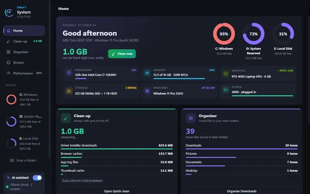

Project story
An old Raspberry Pi that never sleeps
The oldest Raspberry Pi design, with one 700 MHz core and 512 MB of memory, turned out to be the one machine at home that is always on. It now lets iPhones print without an app, reaches one printer from two networks, and watches the network and messages my phone when something changes.
- Board
- Raspberry Pi 1 Model B Rev 2, the original
- Processor
- One ARMv6 core at 700 MHz
- Memory
- 512 MB (about 448 MB usable)
- System
- Raspberry Pi OS Lite, 32-bit, no desktop
- Jobs
- AirPrint, printer bridge, network collector with Telegram alerts
- Running since
- 10 November 2026
I had a Raspberry Pi in a drawer and I thought it was a Pi 2. It was only when I logged in and read the board's own report that I saw the truth: Raspberry Pi Model B Rev 2. That is the original Pi, the first generation, with a single slow core, no Wi-Fi, and half a gigabyte of memory. It is the oldest and weakest board in the family.
It also turned out to be exactly what I needed, because I had three small problems at home and they all had the same answer: something small that is always on.
The board, in numbers
These are the real specifications of the machine, read from the Pi itself. Everything on this page runs inside them.
| Model | Raspberry Pi 1 Model B Rev 2 (I expected a Pi 2) |
|---|---|
| Processor | ARMv6, one core, 700 MHz |
| Memory | 512 MB, about 448 MB usable by the system |
| Storage | 8 GB microSD card |
| Network | 10/100 Ethernet. No built-in Wi-Fi: a USB Wi-Fi adapter (Ralink RT5370) adds it |
| System | Raspberry Pi OS Lite 32-bit, based on Debian 13. No desktop, no screen: SSH only |
| Set-up | First boot from a cloud-init file written to the card, so the Pi came up already configured |
A newer board would do all of this faster. But this one was free, it draws only a few watts, it has no fan and no noise, and it costs nothing to leave on all day. For jobs that mostly wait, that is the right kind of computer.
Problem 1: the laptop has to stay on
I wanted to watch my home network: which devices join, and when the internet goes down. My first plan was to run the watcher on my laptop. That fails for a simple reason. A watcher only watches while the laptop is on, awake, and on the same network. When the lid closes at night, nobody is watching.
The fix was to move the always-running part off the laptop and onto a machine that never sleeps. The Pi does that, and the laptop now just shows what the Pi has seen.
Problem 2: printing from an iPhone
The printer is an Epson L3150 on my Wi-Fi. For an iPhone to print to it, each person had to install the Epson app first. That is a small chore, but it came up every time a friend or family member needed one page.
iPhones already know how to print without any app, through AirPrint. They only need the printer to announce itself on the network. So I set up the Pi as a print server: it runs CUPS with the Epson driver, and it advertises the printer as Epson L3150 (AirPrint via pi-hub). Now the printer simply appears in the iPhone's Print menu.
This only works if the print server is awake whenever someone wants to print. That is the second reason it had to be an always-on box.
Two details took some fixing:
- Black and white. iPhones ask for a mono print, but the Epson driver names that option differently, so the request was ignored and everything printed in colour. I added a second queue, Epson L3150 B&W, that defaults to mono.
- Banding lines. Prints at the default quality showed faint stripes. Setting the default to plain paper at high quality cleaned them up.
Problem 3: two networks, one printer
My home has two separate networks, each with its own internet line: the Airtel network, where the printer lives, and the ACT network, on a TP-Link router. They cannot be cabled together. So anyone on the ACT network had to switch Wi-Fi to the other network just to print, then switch back.
The Pi sits between them. Its Ethernet cable is on the Airtel network, and its USB Wi-Fi adapter joins the ACT network. With a route on the TP-Link router that sends printer traffic through the Pi, a phone on the ACT network can print without changing network.
I call the Pi a router in conversation, but it is a router with a very narrow job. It does not share the internet between the networks. The firewall on the Pi lets the ACT network reach the printer's print ports and nothing else on the Airtel side, and everything else is dropped. I tested it from a PC on the ACT network: the path went through the Pi to the printer, the printer's other ports and the Airtel router stayed unreachable, and the normal internet on the ACT network was untouched.
What the Pi runs today
All of these share the same single core and under half a gigabyte of memory.
| Job | What does it | Load |
|---|---|---|
| Print server | CUPS and the Epson driver, announced to iPhones with Bonjour | Idle until a print job arrives |
| Network bridge | Linux forwarding and the nftables firewall | Almost none |
| Collector and alerts | The collector: a Python service that scans both networks and sends Telegram alerts (see below) | The heaviest job: about 17% CPU and 26 MB when I first set it up |
A reading taken on 11 November, with everything running, showed 12% CPU, 132 MB of memory used out of 448 MB, and a temperature of 55 °C, after a day and three hours of uptime (the screenshot below is that reading).
Making a slow board behave
A few choices keep this old board dependable:
- No desktop. The Lite system has no screen, no browser and no desktop, so all 448 MB goes to the jobs. I manage it over SSH with a key, no password.
- Few, small services. Every job is a small service that starts at boot. Nothing heavy, no containers, no database server.
- Be patient with updates. A full system upgrade on a single 700 MHz core is slow, so I run it only now and then.
- Keep the logs. On its first day the Pi rebooted itself. The board's watchdog did its job, but the logs were in memory and were lost, so I never found the cause. At that moment the connection tracking table had also reached its limit. Logs are now written to the card, capped at 100 MB, so the next time I can read what happened before the restart.
The first boot did not go smoothly either: only the red power light came on, and the fix was to take out the memory card and push it back in firmly.
The collector, and the Telegram alerts
The heaviest job on the Pi is a small program I call the collector. It does the part the laptop never could, because it never stops. About once a minute it scans both networks, the Airtel network over the cable and the ACT network over Wi-Fi, to see which devices are there and what each one is. Every 20 seconds it also checks that each internet line can actually reach the internet.
When something changes, it tells my phone through Telegram:
- A new device. One I have not approved joins a network. The message says what the device looks like, so I can tell a visitor's phone from something I do not recognise.
- A device comes back. A known device that had left rejoins.
- An internet line goes down, and comes back. These are marked critical, so they get through even when I have paused the other alerts.
The alerts are sent from the Raspberry Pi itself. If one network goes down, the Pi automatically flips to the other network's working internet and sends the alert from there. That is what the second network buys: when one internet line is dead, the Pi can still reach my phone to say so.
A few small choices keep the alerts useful and quiet:
- The first scan of a new network sends one summary instead of a message for every device.
- The Windows app shows what the Pi found but sends no Telegram of its own while it is doing so, so I never get a message twice.
- On the Pi, the bot's key is kept in a file that only the collector can read.
- The Pi has its own on and off switch for alerts. Turning Telegram off in my Dashboard does not stop it, and I learned that the useful way.
On 10 November the Pi sent its first test message to my phone, and the collector has been running there since.
A neighbour on the same board: Network Watch
The collector is the engine of a separate project of mine called Network Watch. The Windows app of the same name shows what the Pi has found: the devices, the alerts, and the Pi's own health. Network Watch has its own story, so this page stays with the Pi.

What it cannot do
- It is not a full router. It does not share internet between the networks, and it does not speed anything up.
- If the Pi is off, printing from the second network and AirPrint both stop, until it is back.
- Its Wi-Fi is the 2.4 GHz band of a cheap USB adapter, and its cable port is 100 Mbit. Both are plenty for a printer and a network scan, but it is not a machine for streaming or file sharing.
- One job is still waiting on my list: reserving its address on the Airtel router so it never changes.
What I took from it
The need came first: a watcher that does not depend on a laptop, a printer that does not need an app, and two networks that cannot be joined. The Pi was not chosen because it was powerful. It was chosen because it was already there, it never gets tired, and what I needed from it was small. An old, slow board is enough when the job is to wait and then do one thing well.
